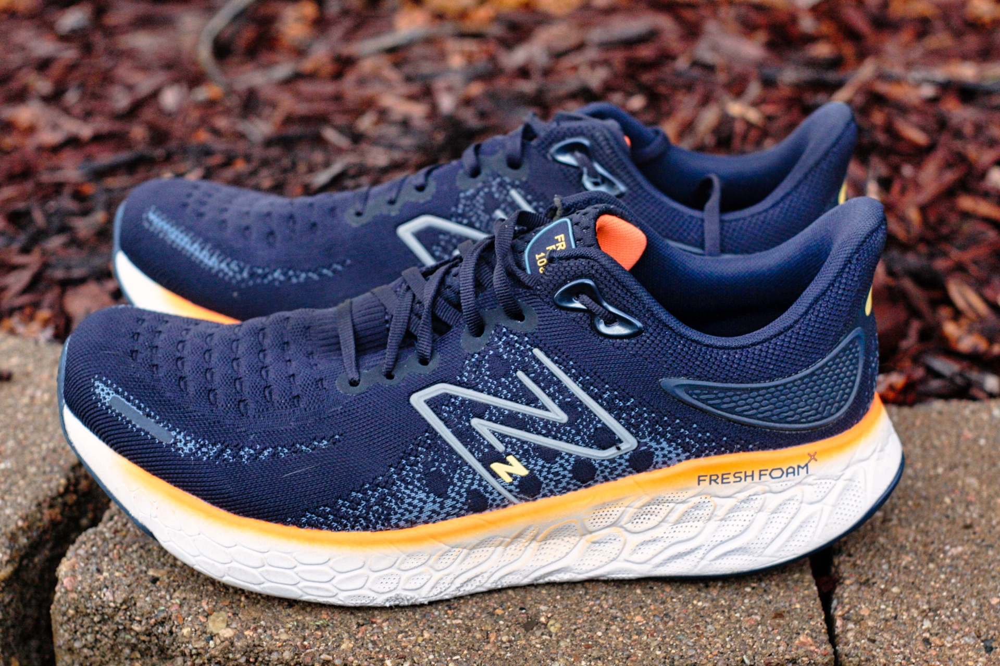
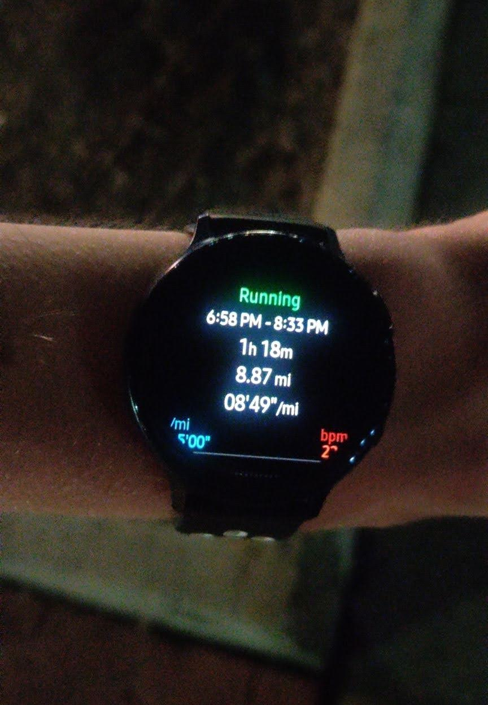

Day in The Life of a Planned Distance Trail Run
Breakfast
Can't participate in cardio without nutrition and energy after all! Also a recent believer in occasional caffeine, L-theanine, and Taurine before exercise.
Stretch
So many people complain that they can't run due to pains and cramps, and not stretching adequately is often the culprit - I can't stress this enough!
Even though there's so much controversy regarding dynamic, and especially static, stretching, I find (maybe it's just psychological?) that I rarely cramp if I spend an extended period of time stretching to the point that my legs barely loosen up when I begin running.
Shoes

Shoes, arguably one of the few pieces of gear necessary to go out on a run- investing in a pair that fits and feels well is well worth!
Warmup
Start
Water
One of the best refreshments during exercise, especially running :]
Finish

Seeing your running stats after a long workout- one of the greatest satisfactions of running! (After the runner's high of course.)
Gatorade
Or whatever else on hand I happen to have and didn't run out of yet until my next dollar tree run...